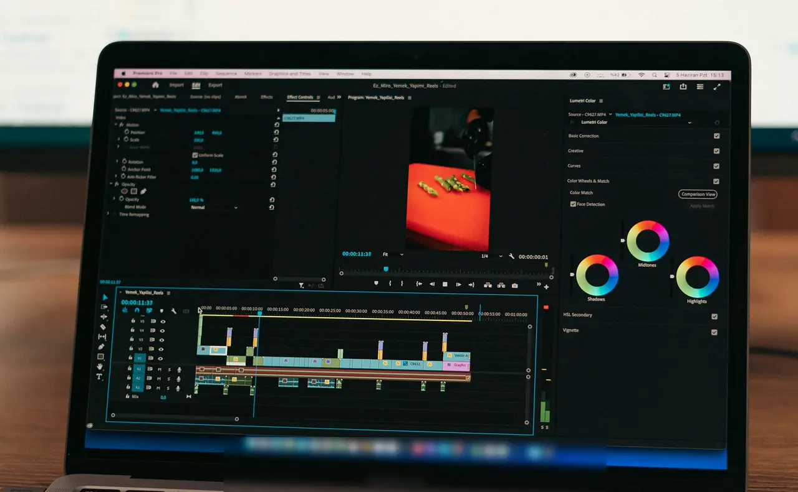
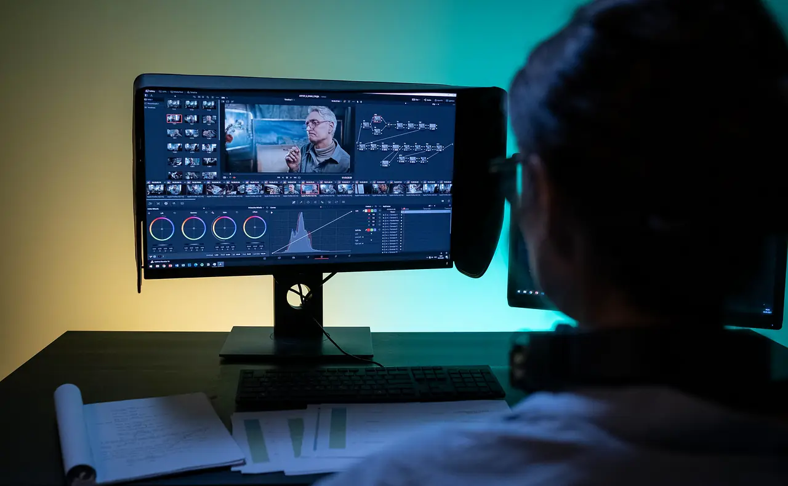

Edit video
Thuê edit video bao nhiêu tiền? Cách tính giá theo video, theo phút, theo tháng
Hỏi ba nơi giá edit video, bạn có thể nhận ba con số chênh nhau nhiều lần mà không biết vì sao. Bài này giải thích các cách tính giá phổ biến, những yếu tố đẩy giá lên và cách so báo giá cho đúng.

Thuê edit video bao nhiêu tiền phụ thuộc chủ yếu vào độ dài thành phẩm, lượng footage cần xem lại, mức độ hậu kỳ (phụ đề, hiệu ứng, chỉnh màu, âm thanh) và số phiên bản cần xuất. Trên thị trường có ba cách tính phổ biến: theo từng video, theo phút thành phẩm và theo gói tháng. Tại Dream Labs, edit video tính theo từng video, từ 800.000đ cho video ngắn đến 60 giây.
Bài này không đưa ra "giá thị trường" chung chung, vì mức giá khác nhau rất nhiều theo người làm và yêu cầu. Thay vào đó, bạn sẽ biết cách đọc một báo giá, những yếu tố làm giá tăng và cách tự ước tính ngân sách. Nếu còn phân vân có nên thuê hay tự làm, hãy đọc thêm bài tự edit video bằng CapCut hay thuê editor.
Ba cách tính giá edit video phổ biến
1. Theo từng video
Cách phổ biến nhất với video mạng xã hội và video quảng cáo. Mỗi video có giới hạn độ dài, danh sách việc làm và số vòng sửa. Ưu điểm là biết trước tổng chi phí. Cần hỏi rõ: vượt độ dài thì tính sao, thêm vòng sửa thì tính sao.
2. Theo phút thành phẩm hoặc theo giờ công
Hay gặp với video dài: hội thảo, khóa học, video sự kiện, phỏng vấn. Giá nhân theo số phút video cuối cùng, hoặc theo số giờ editor làm. Cần lưu ý: một phút thành phẩm có thể được dựng từ năm phút hay một tiếng footage, và lượng footage mới là thứ quyết định thời gian xem lại, chọn cảnh.
3. Theo gói tháng
Dành cho doanh nghiệp đăng đều: một số lượng video cố định mỗi tháng, hoặc thuê một editor làm bán thời gian. Làm theo lô giúp editor dùng lại cùng phong cách, cùng mẫu phụ đề, cùng nhạc hiệu, nên dễ thương lượng giá hơn đặt lẻ. Cần hỏi: video không dùng hết trong tháng có được dồn sang tháng sau không.

Những yếu tố đẩy giá edit video lên
Độ dài và lượng footage
Video càng dài, càng nhiều cảnh thì càng nhiều giờ dựng. Nhưng lượng footage gốc cũng quan trọng không kém: gửi hai tiếng quay để lấy ba phút khác hẳn gửi mười phút quay để lấy một phút.
Phụ đề
Phụ đề tĩnh chữ trắng đơn giản ít công hơn phụ đề động có nhấn từ khóa, đổi màu, chạy theo nhịp nói. Video nói nhiều thì phụ đề chiếm phần đáng kể thời gian dựng.
Chỉnh màu và âm thanh
Chỉnh màu cơ bản cho đều sáng khác với color grading tạo không khí riêng. Âm thanh cũng vậy: chỉ thêm nhạc nền khác với lọc tiếng ồn, cân giọng, thêm hiệu ứng âm thanh (sound design).
Đồ họa, hiệu ứng, motion text
Chữ chuyển động, đồ họa chèn, VFX, chèn mô hình 3D đều làm tăng giá. Nếu cần nhiều đồ họa giải thích, có thể bạn đang cần một video motion graphic hơn là edit; xem bài video motion graphic là gì.
Kịch bản dựng
Bạn đã biết rõ muốn video kể gì, hay cần editor tự xem hết footage rồi đề xuất cấu trúc? Việc thứ hai là công việc biên tập nội dung, tốn thời gian hơn nhiều so với cắt theo kịch bản có sẵn.
Số phiên bản xuất
Một video cần bản dọc 9:16 cho TikTok, Reels, bản vuông 1:1, bản ngang 16:9 cho YouTube, website. Mỗi tỷ lệ phải sắp lại khung hình và vị trí chữ. Bộ clip cắt ngắn từ video dài cũng là phần việc riêng.
Số vòng sửa và thời hạn
Nhiều vòng sửa và cần gấp đều tăng giá. Góp ý một lần, đầy đủ, theo mốc thời gian trong video giúp bạn giữ chi phí trong gói.
| Hạng mục | Mức đơn giản | Mức nâng cao | Ảnh hưởng giá |
|---|---|---|---|
| Độ dài thành phẩm | Dưới 60 giây | Vài phút đến 10 phút | Lớn |
| Footage gốc | Ít, đã chọn sẵn | Nhiều, editor tự chọn | Lớn |
| Phụ đề | Phụ đề tĩnh | Phụ đề động, nhấn từ khóa | Vừa |
| Chỉnh màu | Cân sáng, cân màu | Color grading theo phong cách | Vừa |
| Âm thanh | Nhạc nền | Lọc ồn, sound design | Vừa |
| Đồ họa | Logo, chữ tiêu đề | Motion text, VFX, 3D | Lớn |
| Số tỷ lệ xuất | Một tỷ lệ | Ba tỷ lệ và clip cắt ngắn | Vừa |
| Kịch bản dựng | Khách có sẵn | Editor đề xuất cấu trúc | Vừa đến lớn |
So sánh freelancer và agency
Không có lựa chọn đúng cho mọi trường hợp. Mức giá cụ thể khác nhau rất nhiều theo kinh nghiệm từng người, nên bảng dưới so sánh theo cách làm việc thay vì con số.
- Freelancer: thường linh hoạt và chi phí mềm hơn, hợp với việc đơn giản, lặp lại. Rủi ro nằm ở việc phụ thuộc một người: khi họ bận hoặc ốm, lịch đăng của bạn dừng. Cần thỏa thuận rõ bằng văn bản về số vòng sửa, thời hạn, bàn giao file gốc và bản quyền nhạc.
- Agency, studio: có quy trình, có người thay thế khi một thành viên bận, thường kèm thêm kịch bản, đồ họa, motion. Giá thường cao hơn freelancer cho cùng một video đơn giản, nhưng đỡ thời gian quản lý hơn khi bạn cần nhiều video đều đặn hoặc video có nhiều hạng mục.
- Nhân viên nội bộ: hợp khi nhu cầu đủ lớn và đều quanh năm. Ngoài lương còn chi phí máy tính, phần mềm, nhạc bản quyền và thời gian đào tạo.
Ví dụ minh họa: một shop thời trang online ở Hà Nội đăng mỗi ngày một video ngắn. Tháng thường thuê một freelancer dựng theo mẫu cố định là đủ. Nhưng đợt ra bộ sưu tập mới, shop cần một video quảng cáo có kịch bản, color grading và bộ clip cắt ngắn chạy quảng cáo; lúc đó thuê studio cho riêng video này hợp lý hơn. Đây là ví dụ để hình dung, không phải khách hàng thật.

Tự ước tính ngân sách edit video trong 5 bước
- Đếm số video mỗi tháng theo từng loại: video ngắn đăng hằng ngày, video dài cho YouTube, video quảng cáo.
- Ghi độ dài và nơi đăng của mỗi loại để biết cần bao nhiêu tỷ lệ khung hình.
- Đánh dấu hạng mục cần có: phụ đề động, chỉnh màu, sound design, motion text, clip cắt ngắn.
- Xếp mỗi loại vào một mức gói phù hợp, nhân với số lượng.
- Cộng phần ngoài dựng: quay phim, thuê người mẫu, nhạc bản quyền cho quảng cáo, nếu có.
Bảng tính này cũng giúp bạn gửi yêu cầu rõ ràng cho nhiều bên cùng lúc và nhận báo giá so sánh được.
Chuẩn bị gì để giảm chi phí edit
Phần lớn thời gian của editor không nằm ở thao tác cắt ghép, mà ở việc xem footage, đoán ý khách và sửa lại. Bạn có thể giảm đáng kể phần này bằng vài việc nhỏ trước khi gửi:
- Lọc footage trước. Xóa các đoạn quay hỏng, quay trùng, chỉ giữ những đoạn có thể dùng. Đặt tên file theo thứ tự cảnh.
- Ghi chú cảnh nên dùng. Một dòng như "file 03, từ giây 12 đến 25 là cảnh đẹp nhất" tiết kiệm rất nhiều thời gian xem lại.
- Gửi kịch bản hoặc dàn ý. Dù chỉ ba gạch đầu dòng: mở đầu nói gì, giữa cho thấy gì, kết kêu gọi gì.
- Gửi sẵn tư liệu thương hiệu: logo, màu, phông chữ, câu kêu gọi cuối video, thông tin liên hệ.
- Chọn một video tham khảo và nói rõ bạn thích điểm nào: nhịp cắt, kiểu phụ đề hay tông màu.
- Quay đúng tỷ lệ ngay từ đầu. Cần video dọc thì quay dọc, để editor không phải cắt mất khung hình.
Sai lầm thường gặp khi thuê edit video
- Chỉ so con số cuối. Gói rẻ hơn có thể không gồm phụ đề, chỉ xuất một tỷ lệ, một vòng sửa.
- Gửi footage đã nén qua tin nhắn. Hình vỡ, editor không cứu được. Hãy gửi file gốc qua Google Drive hoặc ổ lưu trữ.
- Không có brief. "Dựng cho đẹp" dẫn đến nhiều vòng sửa vì hai bên hiểu khác nhau.
- Không hỏi về nhạc. Nhạc không rõ giấy phép có thể khiến video quảng cáo bị tắt tiếng hoặc gỡ.
- Không thống nhất bàn giao. Muốn dùng lại mẫu phụ đề, intro cho video sau thì hỏi trước có bàn giao file dự án hay mẫu không.
- Góp ý rải rác nhiều lần. Mỗi lần gửi một ý làm tốn vòng sửa; hãy gom góp ý kèm mốc thời gian.
Giá edit video tại Dream Labs
Dream Labs tính giá theo từng video, dựng từ footage bạn gửi. Gói Cơ bản 800.000đ/video cho video đến 60 giây: cắt ghép, nhạc nền, phụ đề, chỉnh màu cơ bản, làm trong khoảng 2 ngày, 1 vòng sửa. Gói Chuyên nghiệp 2.000.000đ/video cho video đến 3 phút, có phụ đề động, motion text, color grading và xuất 3 tỷ lệ 9:16, 1:1, 16:9, khoảng 3–4 ngày, 2 vòng sửa. Gói Cao cấp 5.000.000đ/video cho video đến 10 phút hoặc TVC, gồm kịch bản dựng, sound design, VFX, chèn đồ họa 3D và bộ 5 clip cắt ngắn, khoảng 5–7 ngày, 3 vòng sửa.
| Gói | Giá | Thời gian | Bao gồm |
|---|---|---|---|
| Cơ bản | 800.000đ/video | 2 ngày1 vòng sửa | Video gọn gàng, có phụ đề để đăng đều đặn mà không mất thời gian tự dựng.
|
| Chuyên nghiệpPhổ biến nhất | 2.000.000đ/video | 3–4 ngày2 vòng sửa | Video giữ người xem tới cuối, dựng một lần dùng được cho TikTok, Reels và YouTube.
|
| Cao cấp | 5.000.000đ/video | 5–7 ngày3 vòng sửa | Video quảng cáo chỉn chu kèm 5 clip ngắn: đủ nội dung cho cả một chiến dịch.
|
Quay phim tại chỗ được báo giá riêng. Xem chi tiết trang dịch vụ edit video, trang edit video TikTok, Reels nếu bạn chủ yếu làm video ngắn, và bảng giá các dịch vụ. Cần báo giá theo lô cho cả tháng, nhắn Zalo 0934 246 420 kèm số lượng và độ dài video. Muốn làm video bán hàng hiệu quả hơn, xem thêm bài edit video TikTok, Reels bán hàng.
Câu hỏi thường gặp
Thuê edit một video TikTok bao nhiêu tiền?
Tùy độ dài, phụ đề, hiệu ứng và số vòng sửa. Tại Dream Labs, video ngắn đến 60 giây có cắt ghép, nhạc nền, phụ đề và chỉnh màu cơ bản thuộc gói 800.000đ/video mỗi video.
Nên thuê edit theo video hay theo tháng?
Đăng không đều hoặc chỉ cần vài video thì tính theo video. Đăng đều mỗi tuần với cùng phong cách thì đặt theo lô hoặc gói tháng để dễ lên lịch, giữ phong cách đồng nhất và thương lượng giá theo lô.
Vì sao giá edit video chênh lệch nhiều giữa các nơi?
Vì mỗi nơi tính phạm vi khác nhau: độ dài, lượng footage, phụ đề tĩnh hay động, chỉnh màu, sound design, số tỷ lệ xuất và số vòng sửa. Hãy so báo giá theo cùng một danh sách hạng mục.
Giá edit đã gồm quay phim chưa?
Thường là chưa. Edit video là dựng từ footage bạn gửi; quay phim cần ê-kíp, thiết bị và thời gian riêng nên được báo giá riêng.
Cần gửi gì cho editor để báo giá chính xác?
Mục tiêu video, nơi đăng, độ dài mong muốn, lượng footage, một video tham khảo bạn thích, các hạng mục cần như phụ đề động, chỉnh màu, số tỷ lệ xuất, và thời hạn.
Nhạc trong video thuê edit có bản quyền không?
Không mặc định là có, nên hỏi rõ trước khi thuê: nhạc lấy từ đâu, giấy phép cho phép dùng trên kênh nào. Với video chạy quảng cáo, nên dùng nhạc có giấy phép thương mại rõ ràng để tránh bị tắt tiếng hoặc gỡ.
Sửa video sau khi nhận có mất thêm tiền không?
Mỗi gói có số vòng sửa nhất định, góp ý trong số vòng đó không mất thêm phí. Sửa vượt số vòng hoặc thay đổi lớn như đổi kịch bản, thêm phiên bản thường được báo giá thêm.
Nguồn ảnh: ảnh bìa: Ron Lach / Pexels · ảnh 1: Muhammed Çetinkaya / Pexels · ảnh 2: Ron Lach / Pexels. Ảnh dùng theo giấy phép miễn phí của Pexels, chỉ mang tính minh họa.
Bắt đầu cùng Dream Labs
Muốn biết lô video tháng tới tốn bao nhiêu?
Nhắn Zalo cho Dream Labs số video mỗi tháng, độ dài và nơi đăng. Chúng tôi báo giá theo từng video, không phát sinh mập mờ.